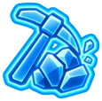

サブマシンガン
スキルポイント1ポイントにつき、サブマシンガンのダメージが+1%増加します。レベル100では最大+100%になります。
<AI> スキルは使用すればするほど向上し、レベル100まで達します。装備、インプラント、状態異常効果によって、実効スキルレベルはそれ以上に上昇する可能性があります。
スキルポイント1ポイントにつき、サブマシンガンのダメージが+1%増加します。レベル100では最大+100%になります。
スキルポイント1ポイントにつきショットガンのダメージが+1%増加し、レベル100で最大+100%になります。
スキルポイント1ポイントにつき、スナイパーライフルのダメージが+1%増加し、レベル100で最大+100%になります。
スキルポイント1ポイントにつきピストルのダメージが+1%増加し、レベル100で最大+100%になります。また、弾の拡散も減少します。
スキルポイント1ポイントにつき、アサルトライフルのダメージが+1%増加し、レベル100で最大+100%になります。
スキルポイント1ポイントにつき、重自動火器のダメージが+1%増加し、レベル100で最大+100%になります。マガジン容量が大きいため、進行速度は遅くなります。
スキルポイント1ポイントにつき、貫通武器のダメージが+1%増加し、レベル100で最大+100%になります。
スキルポイント1ポイントにつき、鈍器のダメージが+1%増加し、レベル100で最大+100%になります。
スキルポイント1ポイントにつき斬撃武器のダメージが+1%増加し、レベル100で最大+100%になります。
スキルポイント1ポイントにつき、拳とナックルのダメージが+1%増加し（レベル100で最大+100%）、攻撃速度が+0.3%増加します（レベル100で最大+30%）。拳とナックルで攻撃することで習得できます。
スキルポイント1ポイントにつき、爆発物、手榴弾、グレネードランチャーのダメージが+1%増加し、レベル100で最大+100%になります。
戦利品ポイントの検索速度が向上します。通常の検索を完了することで習得でき、スキルレベル100になると検索時間が基本時間の約10%に短縮されます。

つるはしを使った採掘速度が向上します。採掘ポイントをクリアすることで習得でき、スキルレベル100になると採掘時間が基本時間の約10%に短縮されます。
伐採と木材収集の速度が向上します。製材ポイントを完了することで習得でき、スキルレベル100になると収穫時間が基本時間の約10%に短縮されます。
しゃがんでいる間は、探知範囲が縮小します。スキルレベル0では100%、スキルレベル100では40%になります。危険区域から探知されずに脱出すると経験値が得られます。敵対行動を取ると、進行と透明化が無効になります。
インプラントやモジュールの製作時間短縮、インプラントの取り付け時間短縮といった、ソフトボーナス付きの幅広いメタスキル。
大量生産：生産時間の短縮とボーナス生産量のチャンス。
すべての消耗品レシピに適用されます：製作時間の短縮と、ボーナス収量が得られる可能性があります。
スキルレベルに応じて近接武器のレシピがアンロックされます。
スキルレベルに応じてレシピがアンロックされます。対象となるのは、コンポーネント、技術アセンブリ、および砲塔のみです。
スキルレベルに応じて銃器のレシピがアンロックされ、製作速度が向上します。
スキルレベルに応じて防具のレシピがアンロックされます。
フラクタルの学習速度が向上します。スキルレベル0では1倍、スキルレベル100では3倍になります。研究を完了するごとに経験値が得られます。
建設期間を短縮し、コストを若干削減する。
井戸からの水の生産速度：スキルレベル0では1倍、スキルレベル100では3倍。経験値は、サイクルが完了するごとに獲得できます。
温室での食料生産速度：スキルレベル0では1倍、スキルレベル100では3倍。経験値はサイクル完了ごとに獲得できます。
修理とメンテナンス：修理時間の短縮と資源コストの削減。